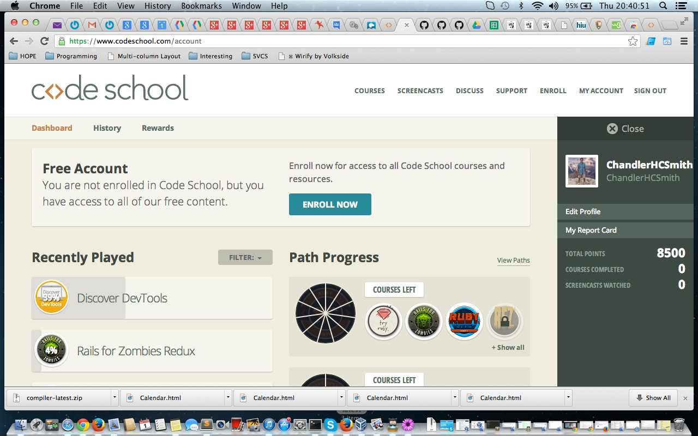
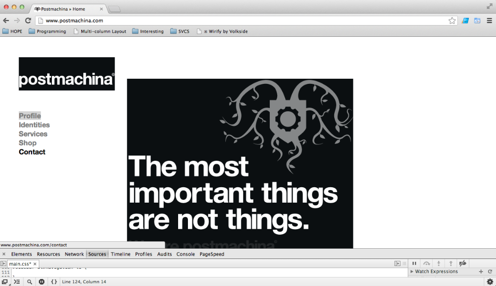

DevTools Quiz
* Explain which tabs support the following actions and how.
* Realtime editing of HTML and CSS
The triple parallel bars in the upper Rt corner, followed by Tools, followed by Tool Developer. Now, you want to use the Elements tab. This allows you to see all of the HTML code organgized as a tree. When you select a portion, the Rt Hand column has the information about its CSS code and for all items of this types/family. Very cool! You can make changes right there to see immediate affects and to look for problems in your code.
Once a piece of code is selected, you can click on the CSS line(s) that affect this piece of code over in the Rt Hand column.
* Javascript Debugging
DevTools comes with a whole suite of JavaScript Debugging files. You can use these along with Breakpoints to help find and correct JavaScript errors.
* Performance Optimization
Using the PageSpeed tab of the speeding page icon in the upper Rt Hand area near the triple parallel bars and navigation, you can check which items are using the most time to load. In some cases you can combine items into one file. This does not decrease the file size, however the page has to make only one request instead of two or three or even 5. Handy!
* What's the quick key for your OS to spawn the Dev Tools inspector?
Command Opt I
Now, POSTMACHINA
* Go to http://www.postmachina.com/ and analyze and tweak this nicely designed page.
* What is the current background color for the page? (Surprisingly, it's not just black!)
The background color is slightly blue: #0b0f11.
* Tweak the background color to white.
Done! :)
* Tweak the height of the side bar that contains the logo. Shrink it down to 85px.
Done! :)
* Roll over the navigation links. When you hover over them, they dissapear. Let's change the hover color to black instead.
Also done! :)
* For the postmachina website, why can't you tweak the color of the text "The most important things are not things"? Please explain.
Their moto is part of an image. It isn't text.
* Go to www.ticketswizard.com and analyze the page.
* What is the largest image on the website?
lg-share-en.gif 325B
* Explain how you would find out this information, and list the URL of offending image here and how big it is.
Run PageSpeed. Go to Networks. To aid click on type. Scan for the largest image.
URL: http://s7.addthis.com/static/btn/v2/lg-share-en.gif
* Test the www.ticketswizard.com website with google's [PageSpeed Insights](http://www.ticketswizard.com/). (You can also download the chrome plugin). What is the lowest hanging fruit to optimize the website? How many kilobytes of data can be eliminated?
Optimize Images
Optimize the following images to reduce their size by 207.7KiB (14% reduction).
Leverage Browser Caching
I am not given a size of savings.